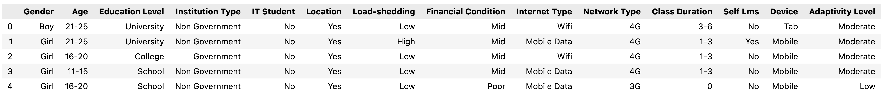
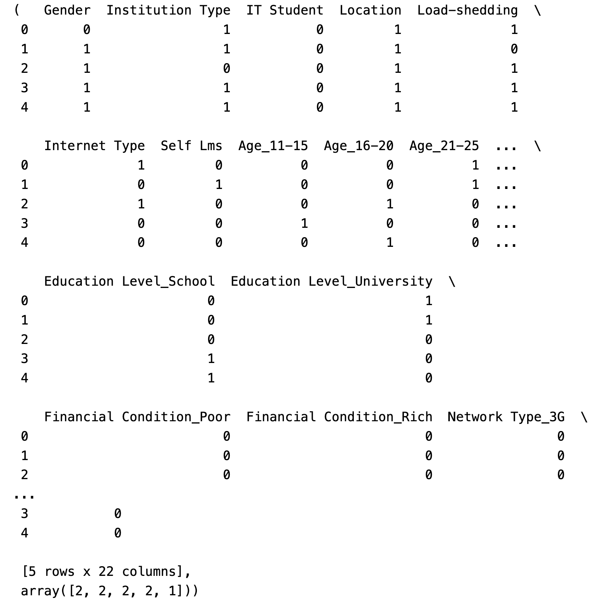
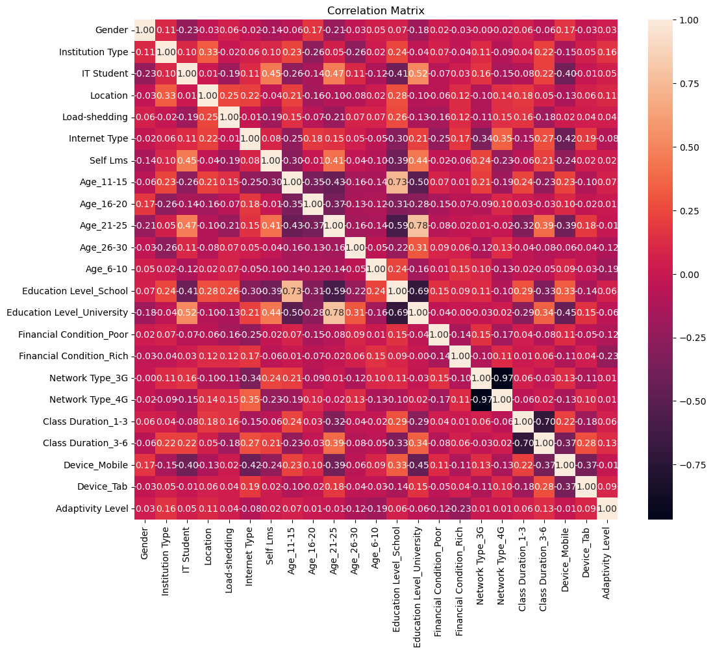
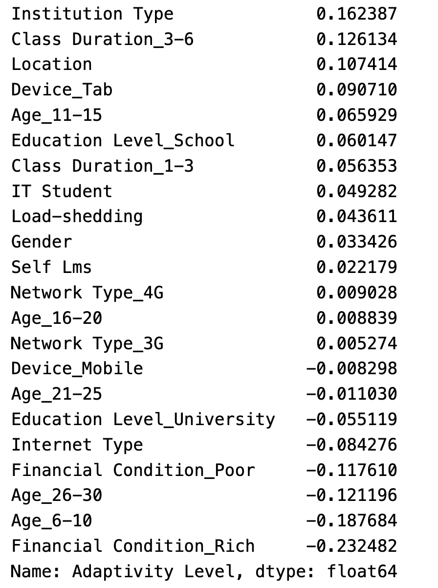

Feature selection for record data
Method
We can use NB in a wrapper feature selection method by assessing subsets of features with the NB algorithm. The subsets that give the best performance are considered to be the most informative features.
Data Encoding
- First, let’s take an overview of our dataset.
- We can see that all the variables are in categorical form.

Since Naive Bayes requires numerical input, we need to encode the categorical variable in the numeric format.
We will use Python’s sklearn library and pandas library to do the encoding.
For binary features, we can use label encoding. For features with more than two categories, we’ll use one-hot encoding.
After encoding, the dataset will appear as depicted in the following illustration.

Feature Selection
First, we’ll compute the correlation matrix for the dataset to understand the relationship between variables. And below is the heatmap that helps visualize the correlation.
From the heatmap, we can identify which features are most correlated with the target from the darker area.

- We can also have a better understanding of the correlation by extracting the correlation values of the features with the target and sort them to identify the most relevant features for our model.

High Positive Correlation: Features like Financial Condition_Mid and Institution Type have the strongest positive correlation with the target and are likely good predictors.
High Negative Correlation: Features like Age_6-10 and Class Duration_0 have strong negative correlations and are also likely to be informative for predicting the target.
Low Correlation: Features closer to zero, like Network Type_3G and Device_Mobile, may not be as useful for predicting the target by themselves.
Then we need to remove features that are highly correlated with each other, keeping only one from each group of highly correlated features to avoid multicollinearity. A threshold for identifying multicollinearity will be set. If the absolute value of the correlation coefficient between two features is higher than this threshold, those features are considered multicollinear.
Result: we will remove three features, which are ‘Education Level_School’, ‘Age_21-25’ and ‘Network Type_3G’.